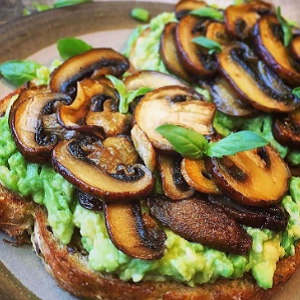

Ingredients
- 2 slices of sourdough bread
- a large handful of mushrooms (I used brown ones)
- 1 tbsp olive oil
- 1 clove of garlic, finely chopped
- 1 avocado
- 1 squeeze of lemon juice
- small handful of fresh basil
- salt & pepper
Instructions
- Slice the mushrooms (thin or thick - you decide) and gently fry in olive oil on medium heat
until golden brown.
- While the mushrooms are frying, toast your bread and mash the avocado in a bowl and add the
lemon juice
- About a minute before the mushrooms are done, add the chopped garlic to the pan to add a nice
garlicky flavour.
- Season with salt n pepper.
- Spread your avo mash on your toast and top with mushrooms and basil.
Source Here